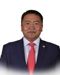

Member of the State Great Khural of Mongolia
Batnasan Otgoo
Member of the State Great Khural of Mongolia BATNASAN Otgoo
Mongolian People's Party
Education, graduated schools, education degree:
1988 Secondary School, Bulgan soum, Bulgan aimag
1992 Primary school teacher, Pedagogy College, Arkhangai aimag
2004 Mathematics and Informatics teacher, Mongolian National University of Pedagogy
2015 “Chinggis Khaan” Institute
2015 Lawyer, National University of Mongolia
Working experience:
1992 - 1994 Primary school teacher, 82nd Secondary School, Ulaanbaatar Trainer at the Traffic Police Authority
2001 - 2016 Director, “Conditer-Ulaanbaatar” LLC
2016 Member of the State Great Hural (Parliament) of Mongolia
Awards:
2010 Order of Labour
2013 Order of “Polar Star”
Foreign language knowledge:
Russian